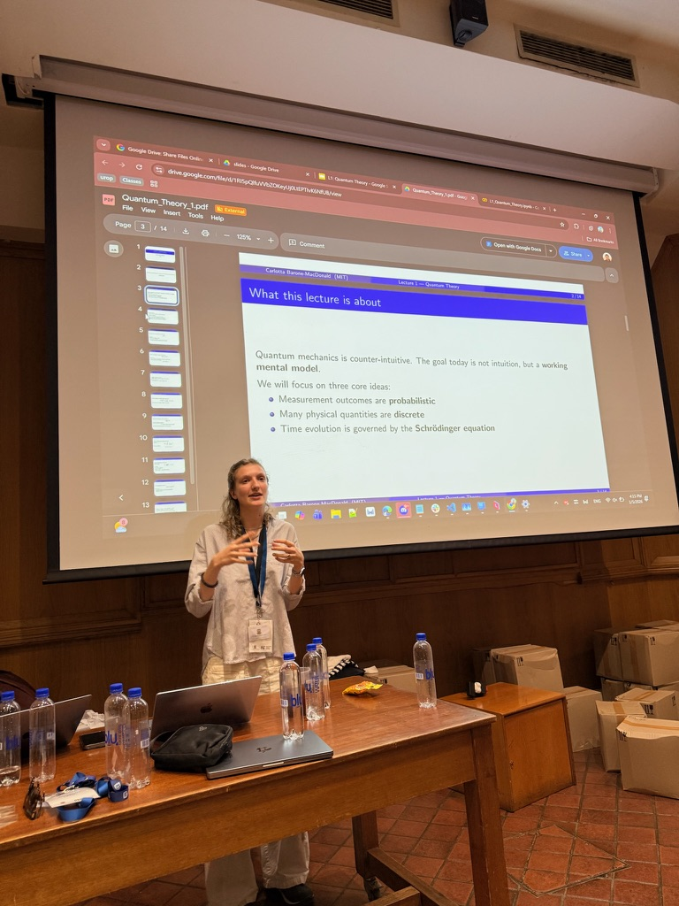
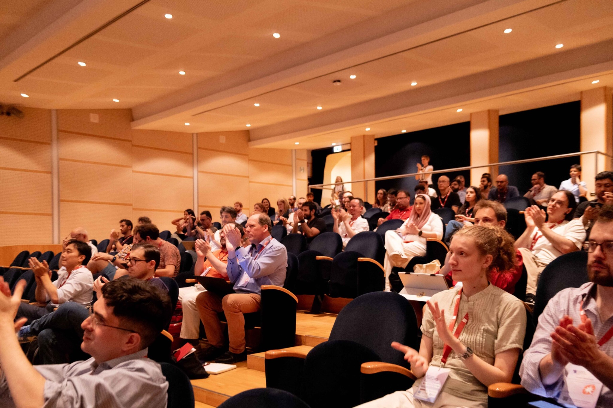
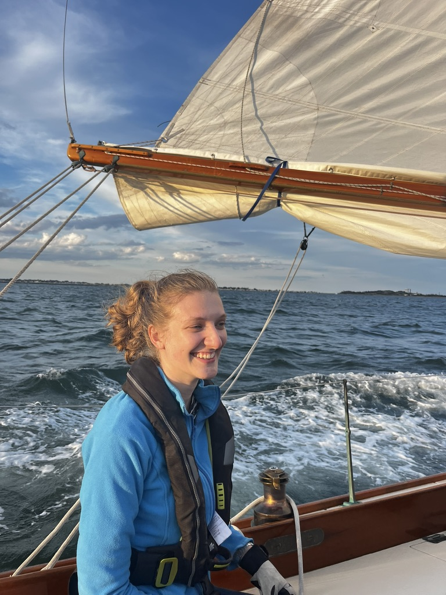
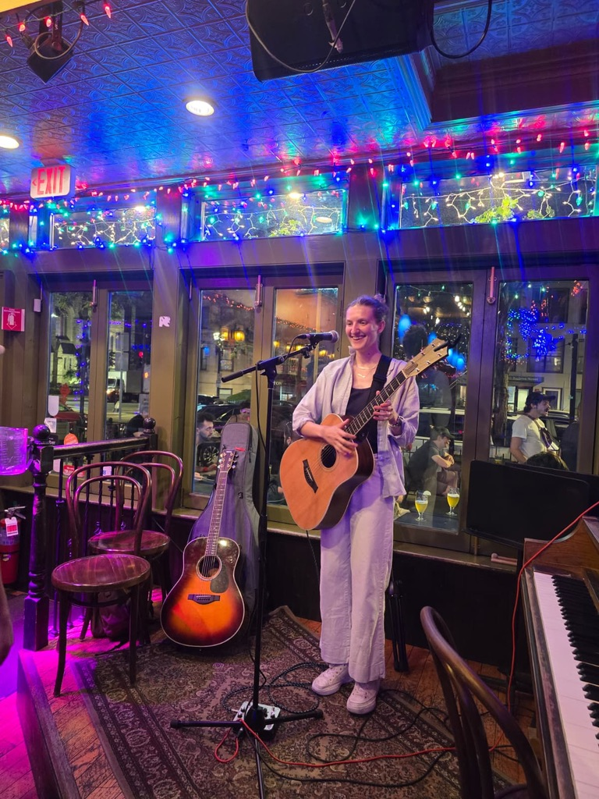
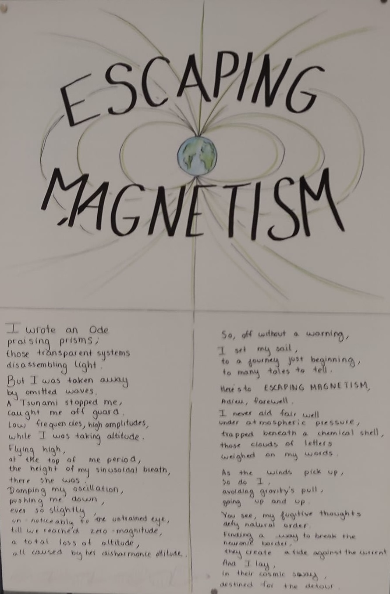
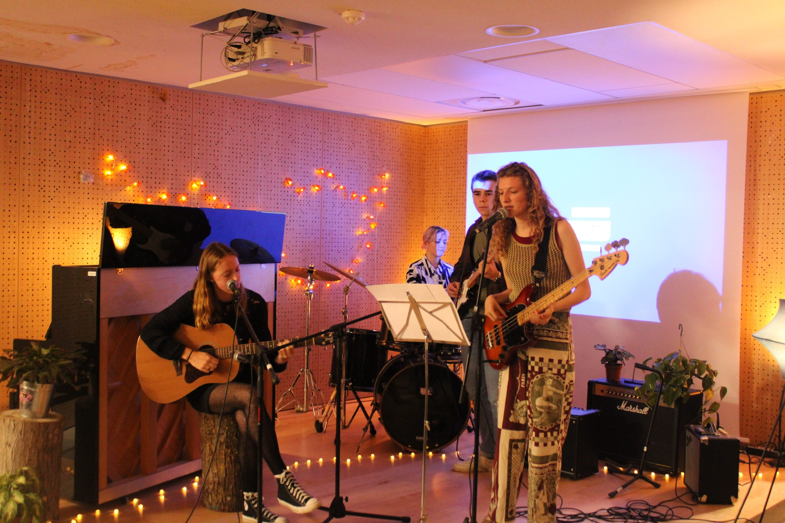

A little more about me.
How'd I get into Quantum?
My interest in quantum mechanics really began during an undergraduate physics lab, measuring the Balmer series of hydrogen. I remember setting up the grating spectrometer and seeing the emission peaks appear. I found it fascinating that quantum mechanics could describe nature at such a fundamental level, while behaving so differently from our everyday intuition.
At École Polytechnique, where I studied mathematics and physics, I started exploring different sides of quantum science. I first worked on quantum information and resource theory at Imperial College, studying what makes quantum computations difficult to reproduce classically. My bachelor’s thesis then took me in a different direction, looking at exciton diffusion in photosynthetic systems and quantum annealing. I liked that both projects used the same underlying physics to ask very different questions.
Since then, my interests have increasingly moved toward quantum computation and simulation. I am especially interested in understanding when a quantum computer can actually tell us something about a physical system that we could not learn efficiently with classical methods—and what has to happen, theoretically and experimentally, before that becomes useful in practice.
At MIT, I have also had the chance to look at science from a different angle through the Technology and Policy Program. That has made me curious about how new scientific fields develop: how we decide which results are convincing, which problems receive attention and resources, and how promising ideas eventually become useful technologies.
The question that ties a lot of this together for me is: what will it take for quantum computation to become a useful tool for understanding nature?
Carlotta beyond the lab.
Outside of research, I love art, painting watercolors, writing poetry, playing a lot of music, and reading philosophy. I also love languages. I grew up in France and have spent much of my life moving between French, English, Spanish and Italian.
I also sail, mostly around Boston Harbor these days. I learned on MIT's Tech Dinghies and summer 2026 joined "Mashnee Ladies", the MIT Women's Offshore Sailing Team. In general, I love things realted to the ocean and hope to take on a transatlantic crossing soon!
Picture Gallery





